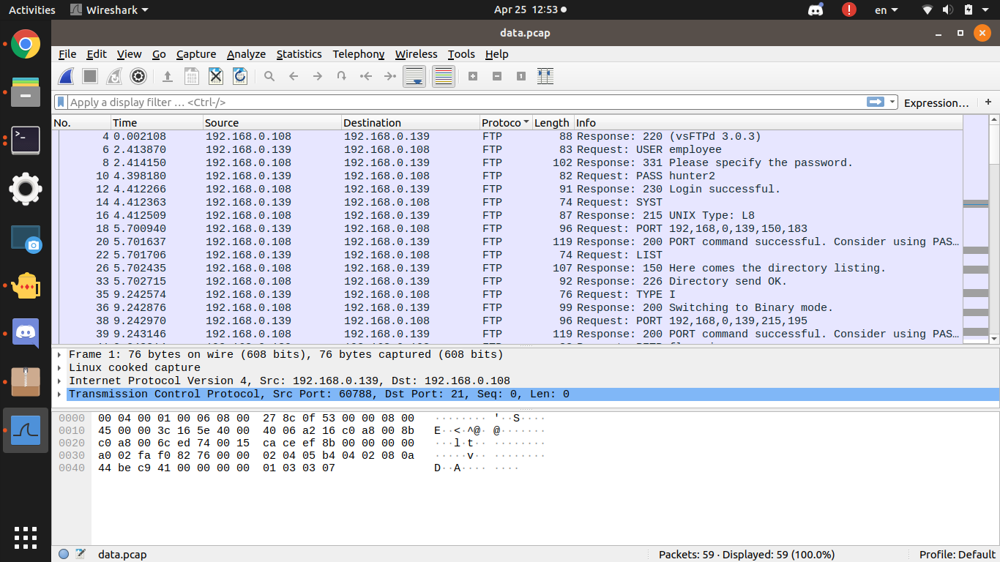
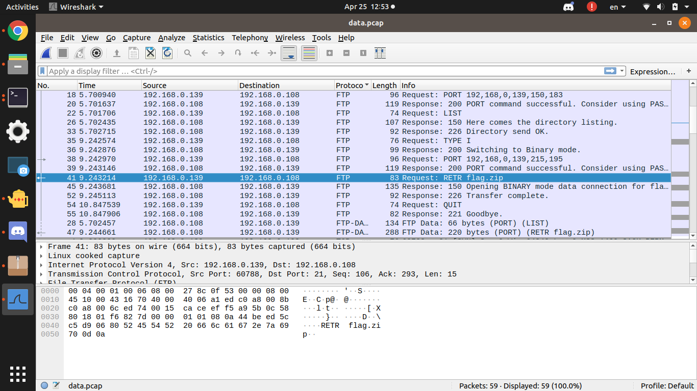
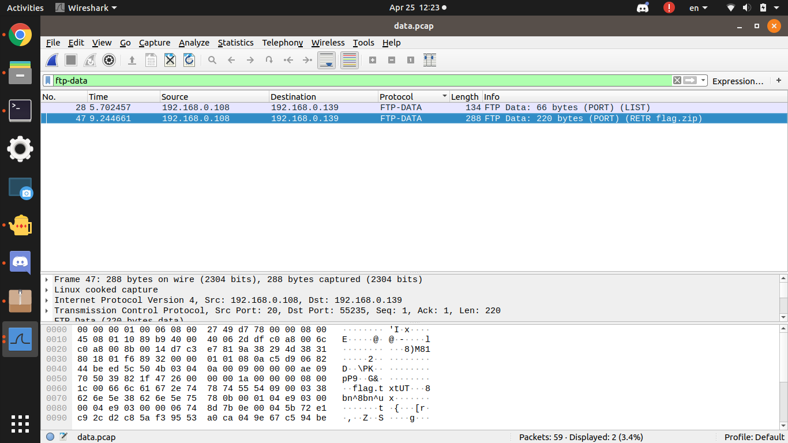
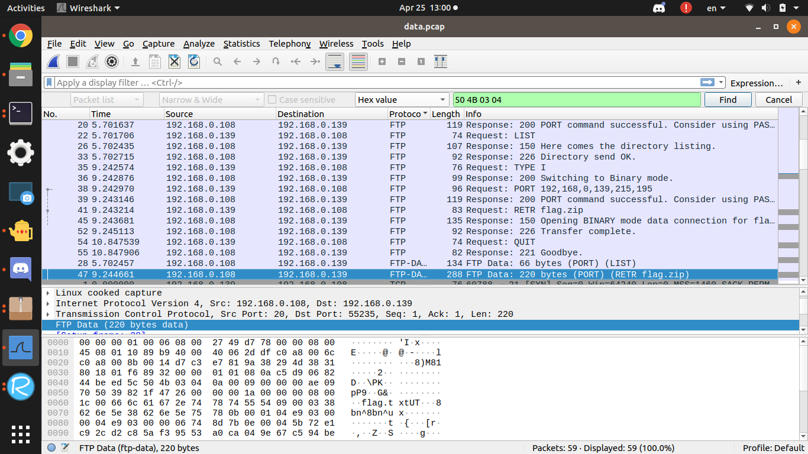
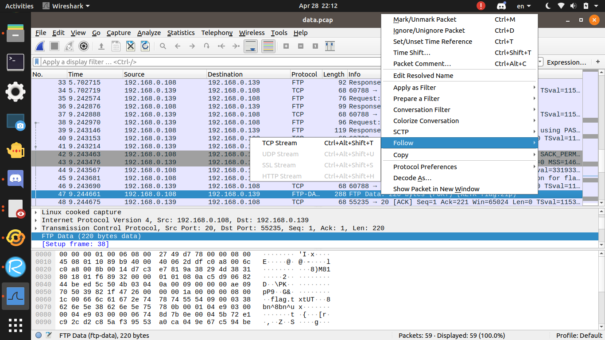
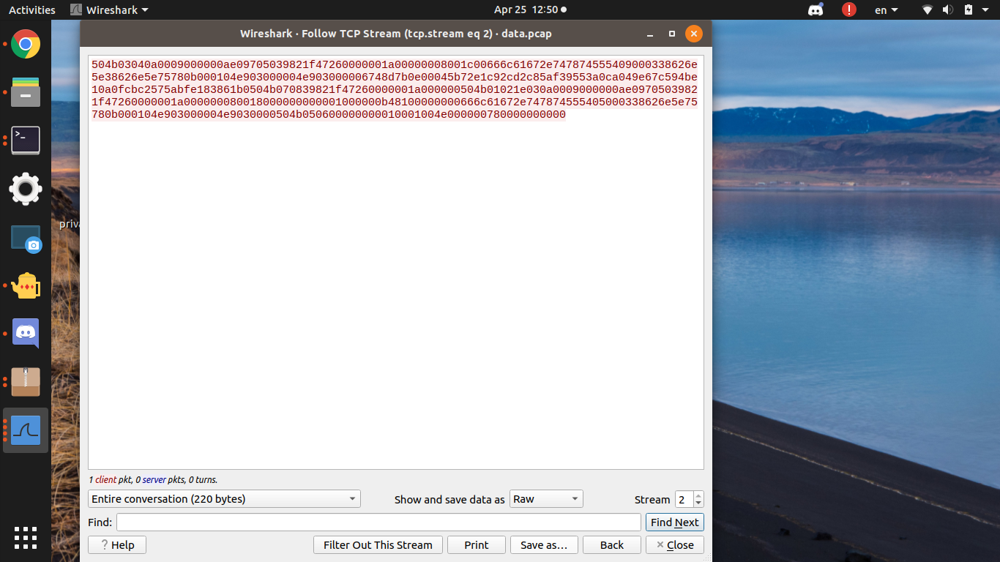
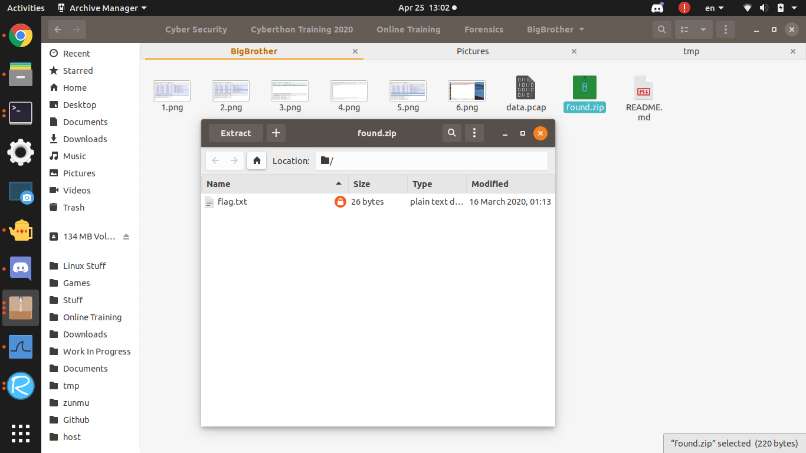
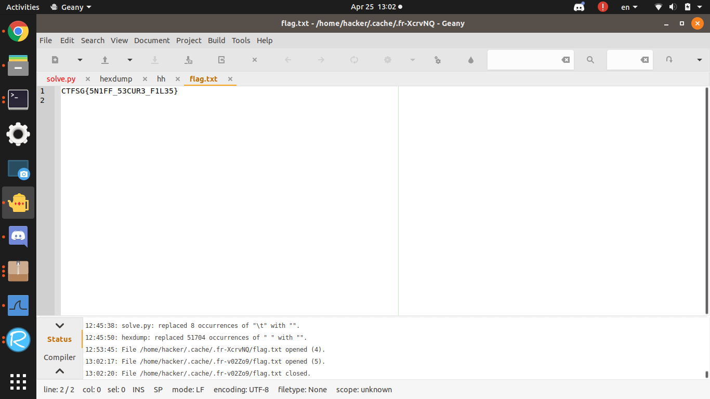

Original Github Link
BigBrother
200, Forensics, 53 solves as of Solving
Description
This employee was so careless that he didn't realize his traffic was being sniffed. Unfortunately for him, he downloaded the flag while being watched. Can you recover the flag from the captured traffic?
Useful tools:
Wireshark
Given
data.pcap
Solution
Analysing the pcap file, there are 3 kinds of packets: TCP, FTP, and FTP-DATA



You also get to know the username employee and password hunter2
From here, you know the zip file header is 50 4B 03 04, and by googling, you get this website which tells you how to extract ftp files from wireshark.
I searched for the zip file header, followed the TCP packet and saved the data as raw with .zip   
Opening up the zip file, the flag.txt file is password protected. But just by guessing the password hunter2 (because employee password), you can see the flag
 
Flag
CTFSG{5N1FF_53CUR3_F1L35}